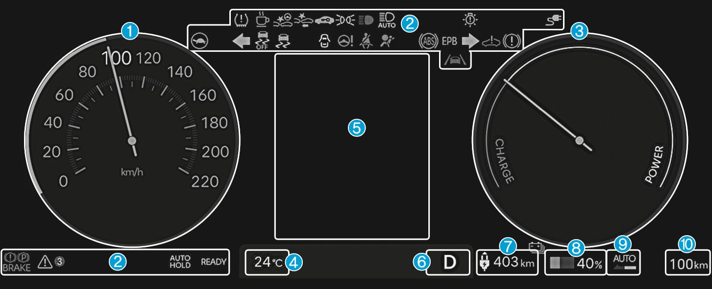
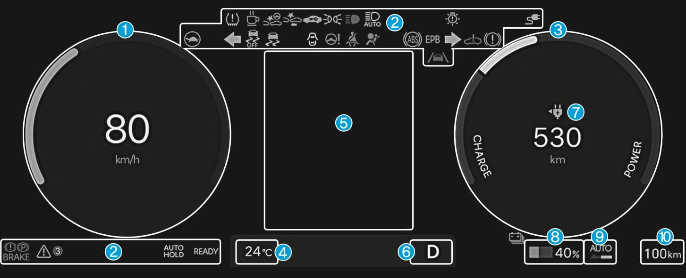
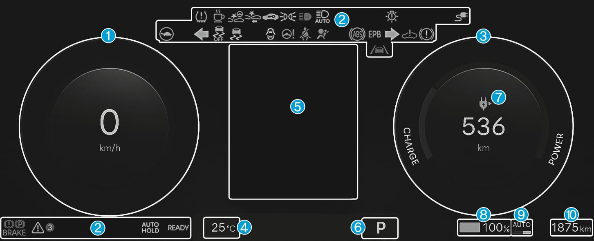

클러스터에 표시되는 정보
클러스터에 표시되는 정보의 이름과 위치를 확인하십시오.
A타입

1C_ClusterOverview
B타입

1C_ClusterOverview_2
C타입

1C_ClusterOverview_3
이 그림은 실제 차량과 다를 수 있습니다.
- 속도계
- 경고등 및 표시등
- CHARGE/POWER 게이지
- 외기 온도
- 클러스터 표시창
- 변속기 위치 표시등
- 주행 가능 거리
- 고전압 배터리 충전 표시계
- 회생 제동 단계 표시등
- 적산 거리계